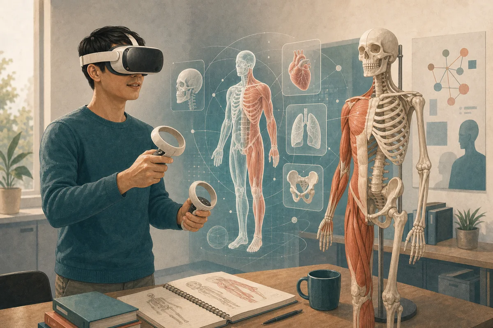
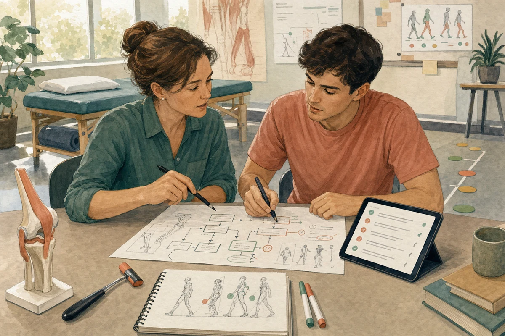
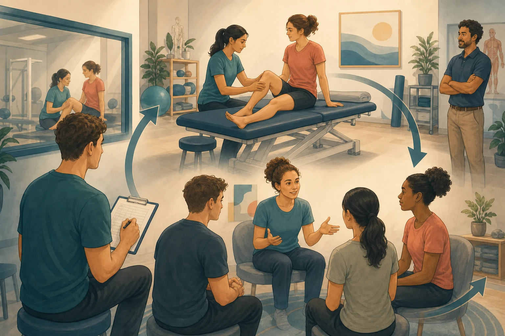

公開學術實驗室
庾德榮
物理治療高級講師
透過人工智能、虛擬實境與模擬教學，設計更有效的臨床推理學習方式。
課程 · 評核 · 科技增強學習 · 健康專業教育
我的工作從教育問題出發，再探討科技能否讓思考更可見、練習更有意義，或回饋更具價值。
精選工作
學術實驗室的實踐證據
精選項目呈現教育問題、設計回應、我的角色及目前狀態，並避免誇大現有證據。

已實施 · 持續評估
虛擬實境針灸學習
- 問題
- 學生需要反覆連接解剖、穴位定位、安全與程序推理，但受時間、場地及督導所限，練習機會有限。
- 方法
- 建立配合課程的虛擬實境應用程式，設有訓練、練習及評估模式，並加入使用前準備與使用後解說。
- 我的角色
- 教育設計者及講師，支援項目發展與課程整合。
- 狀態
- 現行項目：正在發展及整合至課程。

試點
臨床推理聊天機械人
- 問題
- 人工智能可在學生辨認紅旗、比較假設或解釋計劃前，產生看似合理的臨床答案。
- 方法
- 發展優先處理安全篩查、分階段提問、解釋及反思的試點聊天機械人，其後才顯示建議。
- 我的角色
- 研究人員及教育設計者，帶領試點概念與學習設計。
- 狀態
- 試點研究發展中；目前並未宣稱具成效。

持續研究
健康專業模擬教育
- 問題
- 模擬學習往往主要從擔任臨床人員的學生角度討論；學生作為同儕病人、觀察者或同儕反思引導者時可能學到甚麼，現時仍缺乏充分理解。
- 方法
- 採用臨床學習者、同儕病人、觀察者與同儕反思引導者的結構化角色輪換，並提供角色準備、聚焦觀察、引導反思，以及教師對臨床準確性和心理安全的監督。
- 我的角色
- 研究人員及講師，參與角色輪換設計與持續分析。
- 狀態
- 分析與論文撰寫進行中；角色輪換對臨床能力與準備度的影響尚未確立。
近期出版
- 2026 Exploring physiotherapy students’ clinical experiences during educational disruption, through a community of practice lensHealth SA Gesondheid
- 2026 Virtual Reality in Health Professions Education: Qualitative Descriptive Study of Educators’ PerspectivesJMIR XR and Spatial Computing
- 2024 Perceptions of health professions students on the use of immersive virtual realityAfrican Journal of Health Professions Education
教學
先有學習設計，再選科技：課程對齊、評核與臨床推理支援。
探索教學設計背後
最新文章
教育創新背後的決定、張力、限制與偶爾失敗的近期反思。
合作
與我合作
我歡迎在健康專業教育的研究、教學創新、課程發展與教育科技方面進行合作。
- 人工智能與臨床推理
- 虛擬實境課程整合
- 模擬與臨床教育
- 教育研究